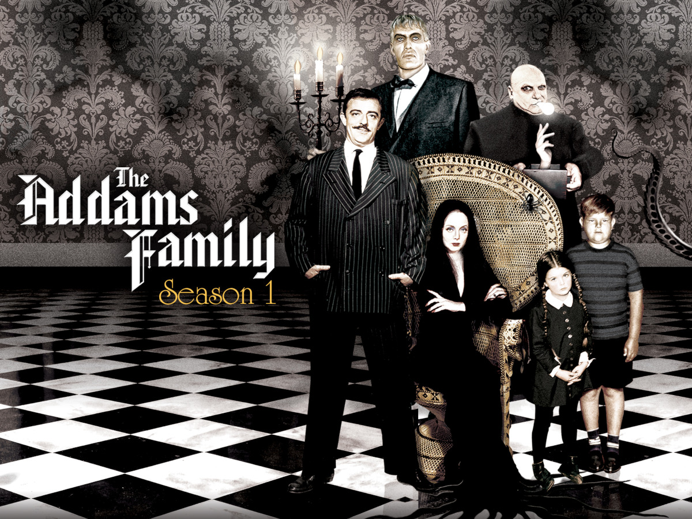
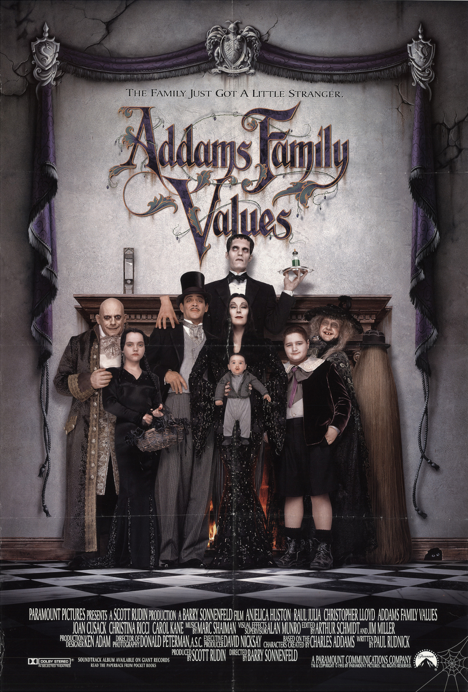

The Family Timeline
The Addams Family: TV series
Macabre/black comedy sitcom based on Charles Addams' New Yorker cartoons.
The 30-minute television series was responsible for taking the unnamed characters in the single-panel gag cartoons and giving them names, back stories and a household setting.
The Addams Family
The Addams Family is an American supernatural black comedy film.
The film focuses on a bizarre, macabre, aristocratic family who reconnect with what they believe to be a long-lost relative, Gomez's brother Fester Addams.
The Addams Family Values
Addams Family Values the sequel to The Addams Family movie.
The film's plot revolves around Debbie Jellinsky, a serial killer who marries Fester Addams intending to murder him for his inheritance, while teenagers Wednesday and Pugsley are sent to summer camp.
...
Wednesday

Wednesday is an American coming-of-age supernatural comedy horror streaming television series.
It revolves around Wednesday Addams, who attempts to solve a monster mystery at her school.